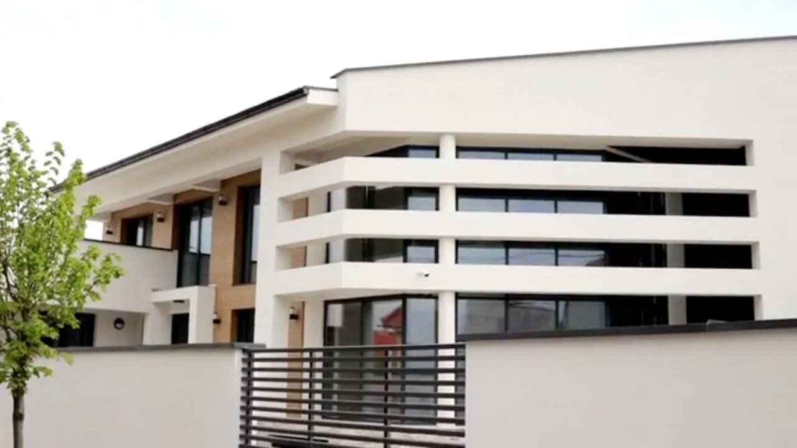
Termoizolație pentru încă o generație
Termopane, uși, balustrade și sisteme de umbrire, montate de echipa noastră și întreținute ani la rând.
Profile și pachete de sticlă alese ca să țină căldura în casă.
Specialiștii noștri măsoară fiecare gol, pentru o montare fără surprize.
Transportul și montajul le facem noi, nu subcontractori.
Garanție la toate produsele și revenim pentru întreținere.
Tot ce ține de ferestrele și ușile casei tale, de la un singur furnizor
Montăm termopane în Târgu Mureș din 2009. Alegem împreună sistemul potrivit, măsurăm la fața locului, montăm cu echipele noastre și revenim pentru mentenanță. Lucrăm cu Salamander, Rehau, Veka, Schüco, Reynaers, Alumil și Aluprof.
Ce ți se potrivește?
Răspunde la patru întrebări și îți arătăm de unde să pornești. Varianta finală o stabilim împreună, la măsurători.
Pasul 1 din 4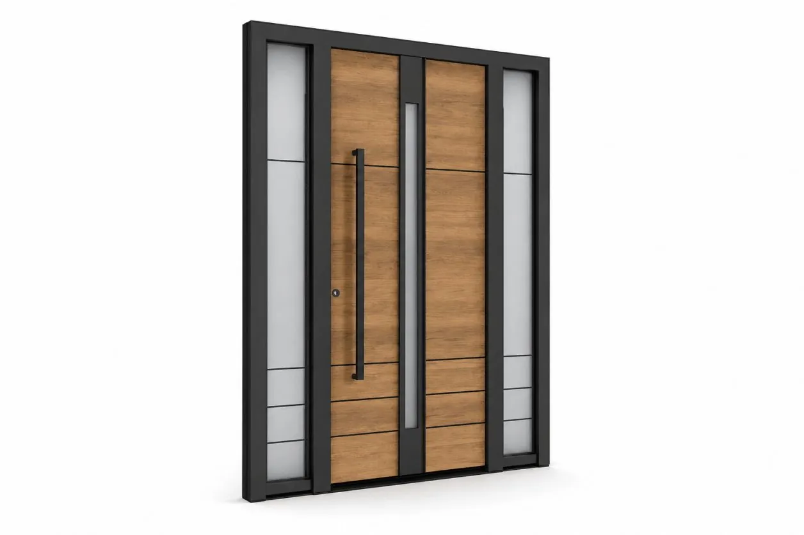
Proiectează-ți ușa de intrare, de acasă
Alegi modelul, culoarea, sticla și accesoriile și vezi pe loc cum arată. La final trimiți configurația, iar noi revenim cu oferta.
PVC sau aluminiu?
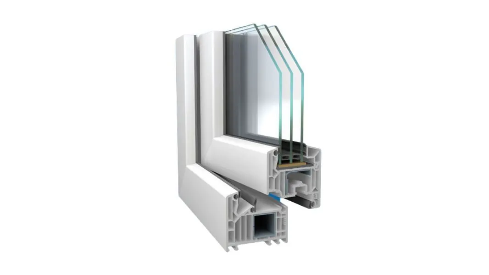
Tâmplărie PVC
Alegerea potrivită pentru cele mai multe case și apartamente: izolează bine, se întreține ușor și are un preț accesibil.
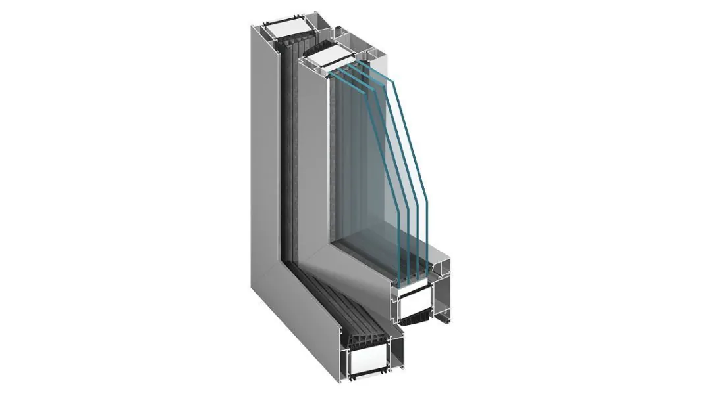
Tâmplărie aluminiu
Pentru deschideri mari și un aspect modern: profilele sunt subțiri, rezistente și susțin suprafețe mari de sticlă.
De la prima discuție până la mentenanță, cu aceeași echipă
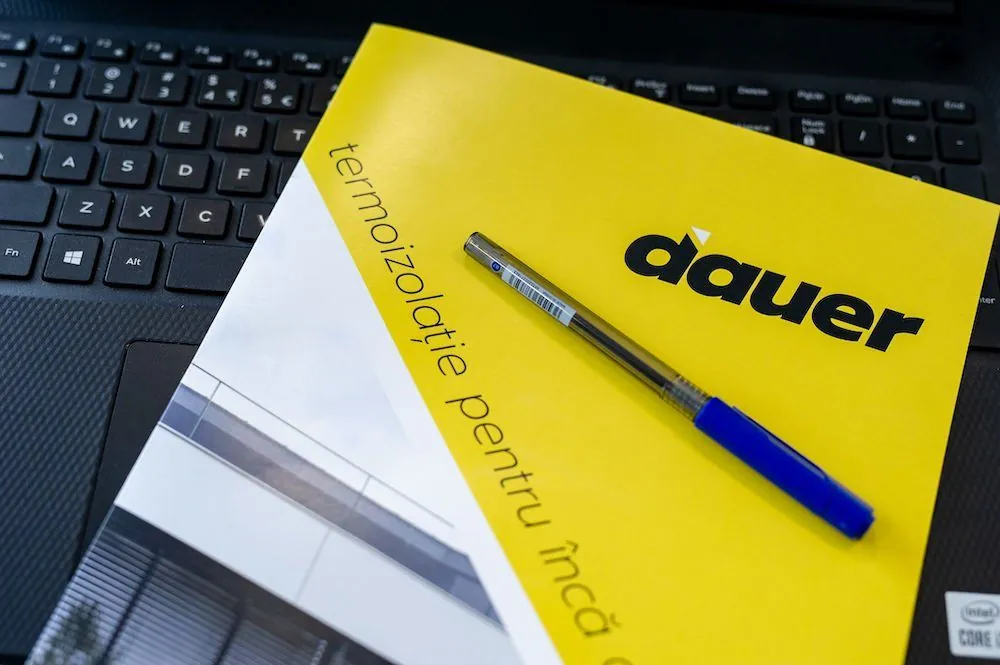
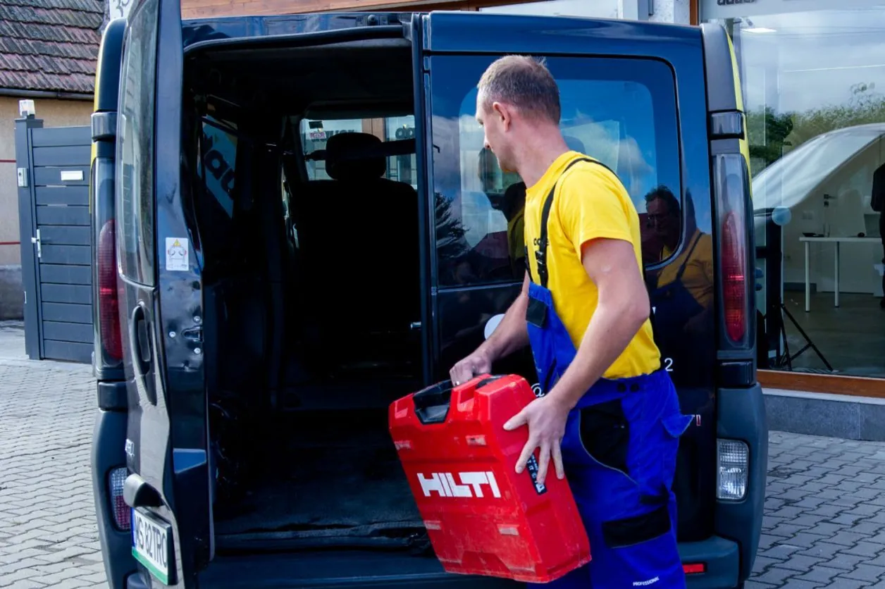
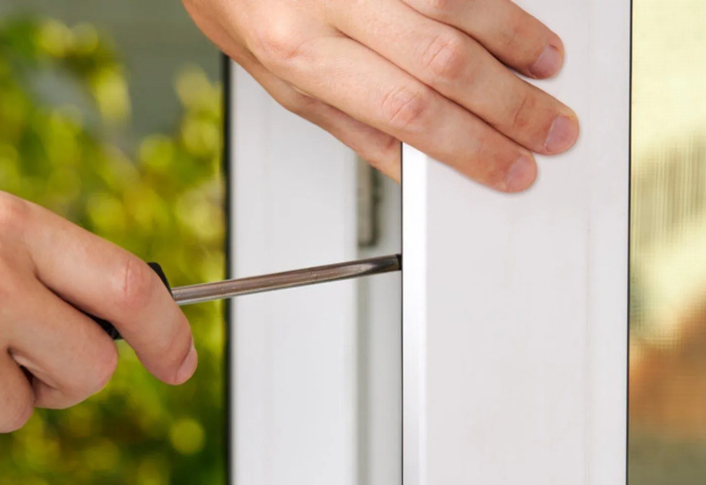
Oamenii care vin la tine acasă
Aceeași echipă te consiliază, măsoară, montează și revine pentru mentenanță. Îi recunoști după tricourile galbene.
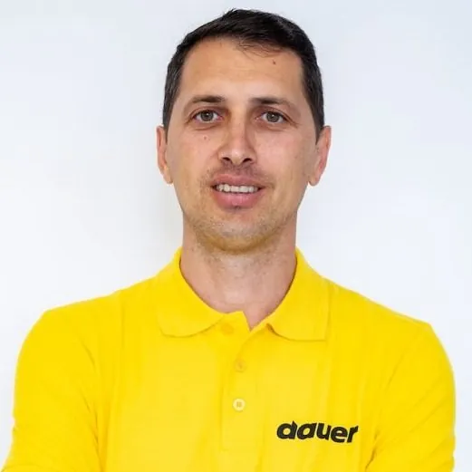
„Măsurăm de două ori, ca să montăm o singură dată.”
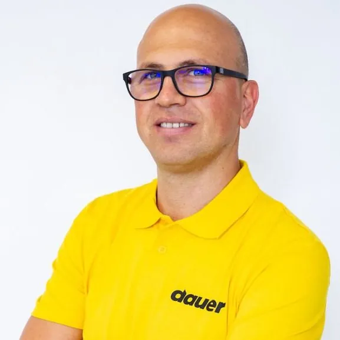
„Un montaj bun nu se vede. Se simte iarna, în casă.”
Proiecte realizate
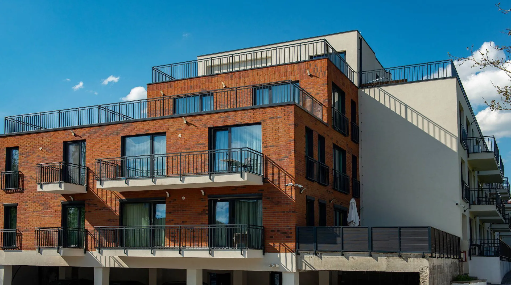
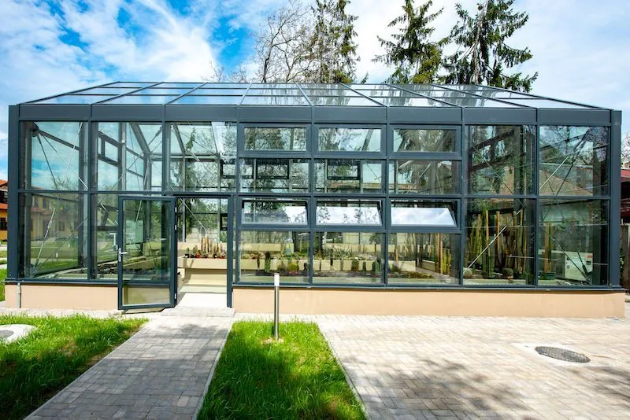
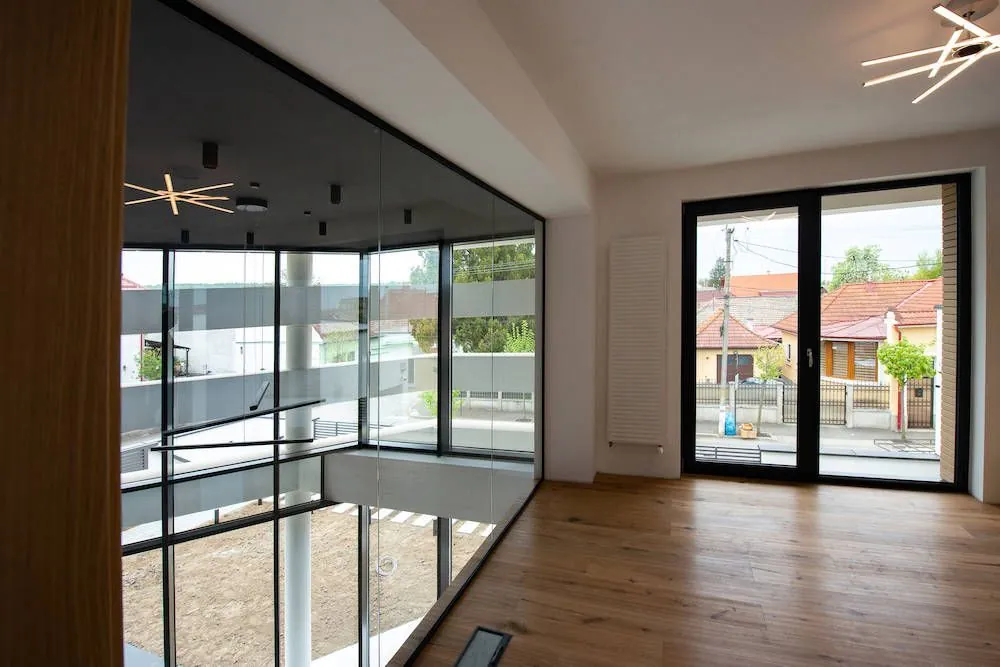
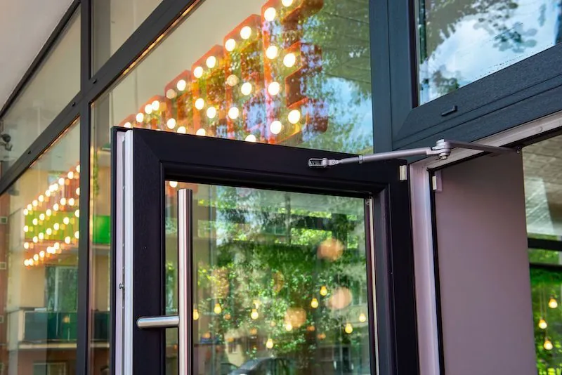
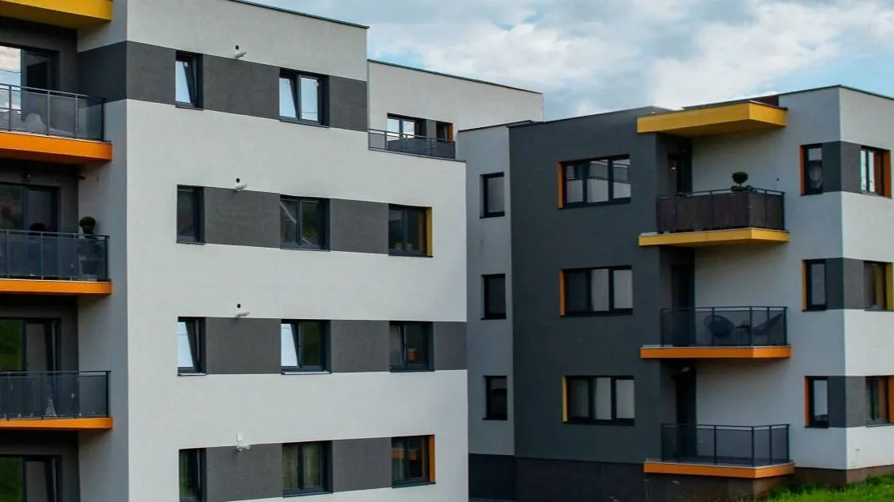
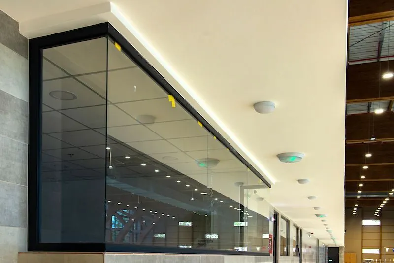
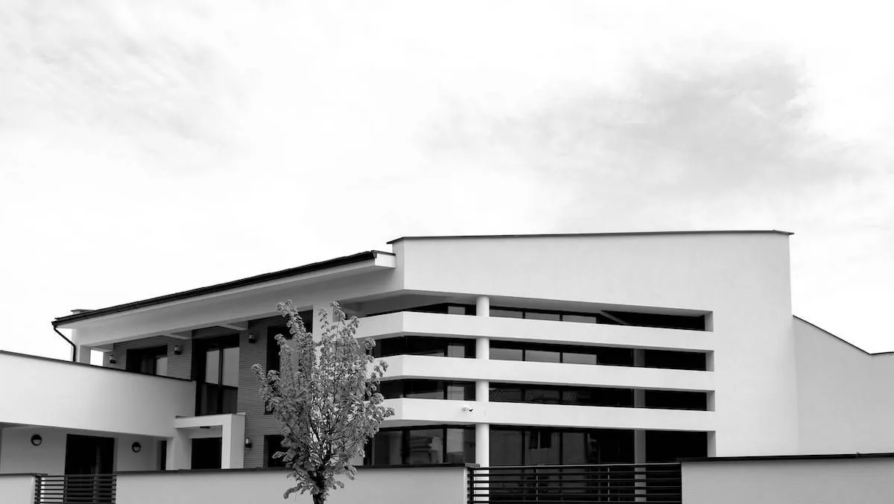
De ce ne aleg clienții
„Seriozitate și venirea în întâmpinarea nevoilor clientului. Promptitudinea, calitatea și seriozitatea. Așteptările mele față de serviciile Dauer au fost atinse.”
„Durata estimată până la livrare și prețul pentru profile. Amabilitatea și seriozitatea. Faptul că fiecare client e la fel de important, indiferent de valoarea comenzii.”
Spune-ne ce proiect ai
Îți răspundem în cel mai scurt timp și stabilim o vizită pentru măsurători.